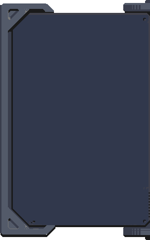

What is this?
I've been wanting to see how a vanilla TF2 server would fair in a scene full of plugin filled servers and so far, it's been going pretty well so I'm keeping them up.
Thank you to Flowyan for letting me use his server for so long. This wouldn't be possible without him.